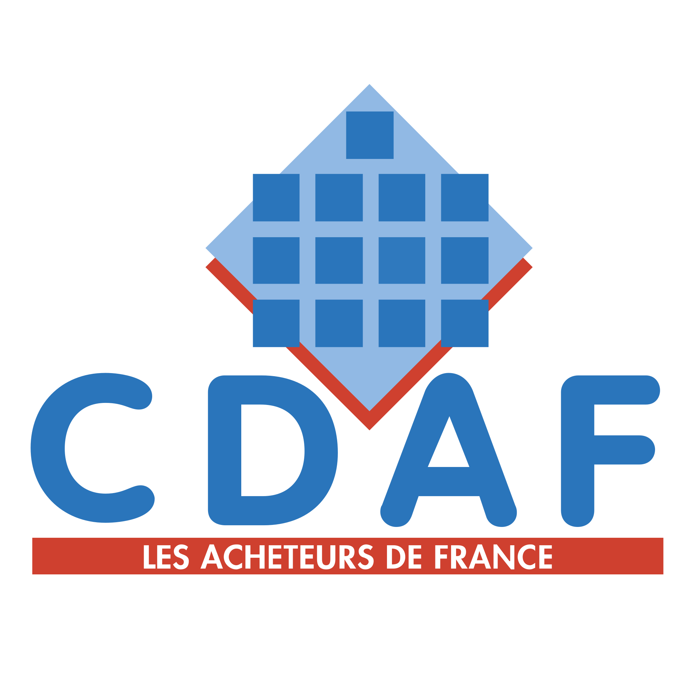
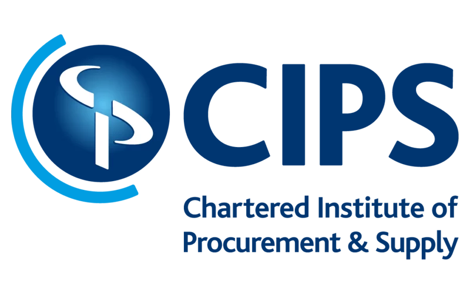
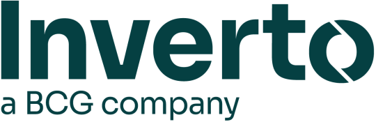

An independent Franco-European cabinet advising CPOs on talent, teams, and transformation across 40+ countries.
Un cabinet franco-européen indépendant conseillant les CPOs sur les talents, les équipes et la transformation dans plus de 40 pays.
Partners & networks Partenaires & réseaux



Durable procurement performance cannot be decreed. It is built with the people who deliver it — team by team, country by country.
La performance achats durable ne se décrète pas. Elle se construit avec les personnes qui la délivrent — équipe par équipe, pays par pays.
Procurement and HR only. Since 1999. Our CRI, SRI and TOSCA frameworks are recognised by procurement leaders across 40+ countries.
Achats et RH uniquement. Depuis 1999. Nos frameworks CRI, SRI et TOSCA sont reconnus par les dirigeants achats dans plus de 40 pays.
Durable performance is not decreed. It is built with the team that executes it. Every engagement puts people at the centre of transformation.
La performance durable ne se décrète pas. Elle se construit avec l'équipe qui l'incarne. Chaque mission place les femmes et les hommes au cœur de la transformation.
Nine languages. Forty countries. Local partners who speak the language — literally and figuratively. No parachute consulting.
Neuf langues. Quarante pays. Des partenaires locaux qui parlent la langue — au sens propre comme au sens figuré. Zéro consulting parachute.
Our original mark was a rising fish releasing bubbles. Twenty years later those bubbles are federations, schools, research networks, and 52 000 practitioners. Each node visible. Each connection intentional.
Notre logo original représentait un poisson libérant des bulles. Vingt ans plus tard, ces bulles sont des fédérations, des écoles, des réseaux de recherche et 52 000 praticiens. Chaque nœud visible. Chaque connexion intentionnelle.